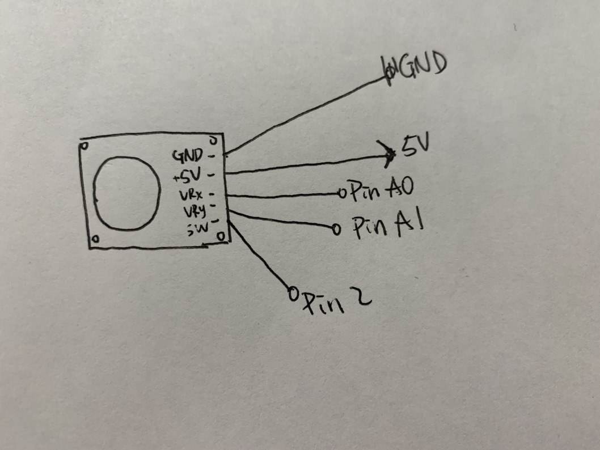
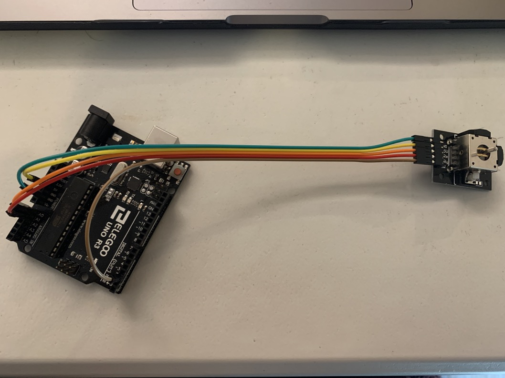
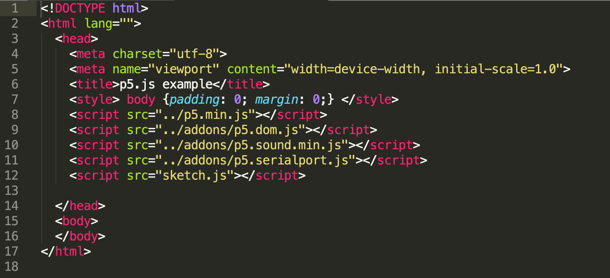
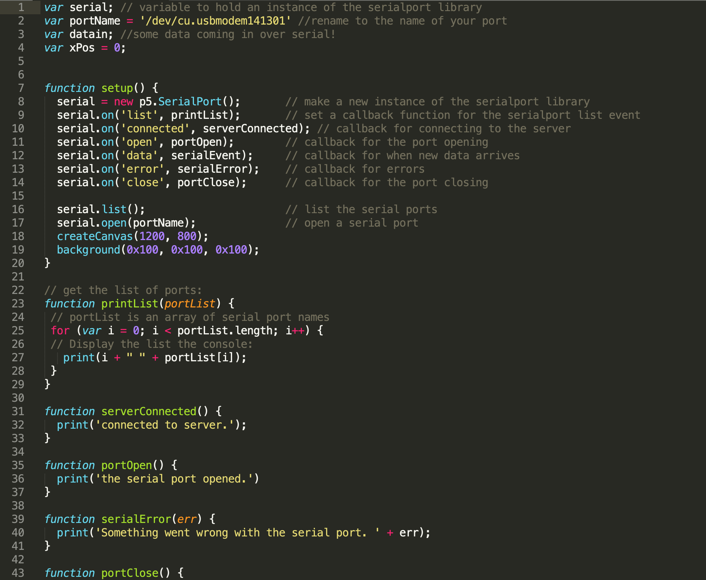
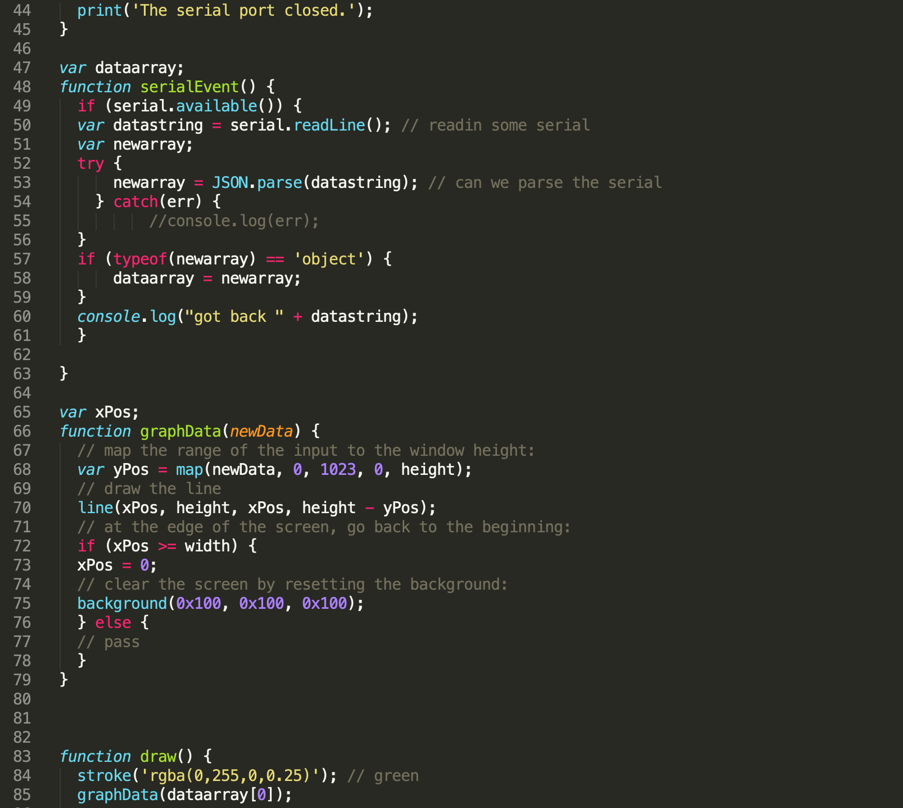
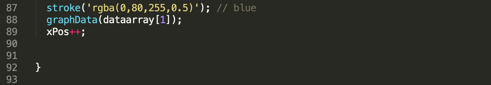

Assignment 5:Talking to the web!
Schematic
GND and +5V are connected to GND and 5V on the arduino. VR_x and VR_y are connected to A0 and A1 because the computer needs to analogRead() from arduino, which only Pins start with 'A' can be used with analogRead(). SW is connected to Pin 2.
Circuit
The joystick consists of two potentiometers which controls its movement in both x- and y- axis.
Firmware
Circuit's operation

The y-axis controls the green lines and x-axis controls the blue lines. They move up and down based on my action.
Webpage's codes




I am getting numbers from 0 to 1023 because that is the range of potentresisters that are able to return. I map them to the height of the screen, so the line won't go off or over the web screen.